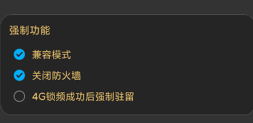
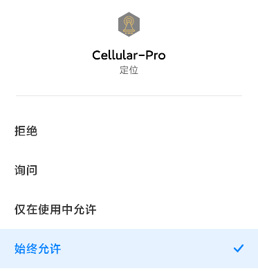
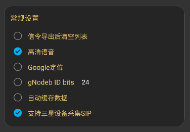

常见问题（Q&A）
一、设备要求
1、系统至少在Android 5.0以上。
2、锁频、锁网、信令及更多的物理层参数需要高通芯片且ROOT，或者海思芯片加上HiAgent服务后才能正常输出。
3、其他芯片可以使用测试功能，不影响配置测试计划和任务执行功能，文件格式可以选择CSV。
4、锁NSA的需要在锁频的界面勾选锁NSA选项。
5、如果频段存在，锁定后回落到2G，这时候可以重新勾选锁网的 “4G” 按钮，强制进入4G模式。
二、支持哪些网络锁定
目前GSM：锁频段；WCDMA：锁频段、频点；LTE：锁频段、PCI、频点；NR：锁频段、PCI、频点。
三、如何知道目前设备支持哪些LTE，NR频段
在“设备”页面可以看到支持的列表，勾选后选择右边的锁。


十、 三星设备呼叫没有SIP消息
四、列表显示正在加载或者设备无法获取到授权怎么办
如果是高通芯片确认ROOT及获取授权。华为设备请确认是否有HiAgent服务，且是鸿蒙2.0以下。如果都已经满足可能是新手机需要适配。
五、不知道锁哪些频段怎么办
LTE举例，首先在设备页面找到支持的LTE频段列表，然后分别进行尝试。如果列表为空可自行百度当前的运营商支持哪些频段。
然后在频段列表里面勾选。不要一次勾选多个，需要一个个的尝试。锁网频段成功后，可以在LTE页面里面看到对应的频点，
记住这些频点后期如果发现那个频点好，可以直接在锁频点哪里输入频点号，比如375等。频点最多可以一次输入2个。
六、普通会员权益
普通会员可以使用锁频，锁网功能（部分芯片5G除外），其他功能受限制。
七、锁频功能无效怎么办
部分手机由于驱动或者权限问题导致无法正常使用，可以在设置->强制功能里面尝试如下方法
-
关闭防火墙。
-
选择兼容模式。

八、高级会员权益
高级会员能无限制使用软件的全部功能，没有广告打扰
-
室内室外测试，测试计划配置。LOG记录,KPI统计。内存回放（信令、事件、参数同步）。工参导入及基站连线，查询。批量信令导出（支持csv，pcap）。单条信令查看，导出。信令，事件双卡分离。地图轨迹不限时间导出（支持csv，kml）。
九、室外地图轨迹不连续怎么办
出于省电的考虑，Android目前限制背景应用使用定位请求。如果在路测中有这样的需求，需要做如下的设置，以小米手机为例：
-
省电策略中选择“无限制”。
-
权限管理中定位选择“始终允许”。
-
没有这个选项请联系作者。

请在设置 -> 更多设置 -> 常规设置中选择支持三星采集SIP。

十一、文件存储路径
-
1.根路径【Android 10及以下】：/CellularPro2.根路径【Android 10以上】：/Android/data/make.more.r2d2.celluar_pro/files/CellularPro3.LOG数据路径（文件dlf/csv/lte/l5g/cu）：logs4.室内轨迹路径（csv/kmz文件）：export/indoor5.室外轨迹导出路径（csv/kml）：export/outdoor6.信令导出路径（csv/pcap）：export/signaling备注1：室内地图测试数据一部分在logs目录，一部分在export/indoor目录。备注2：Android 10以上的设备建议设置备份路径，卸载后数据不会丢失。